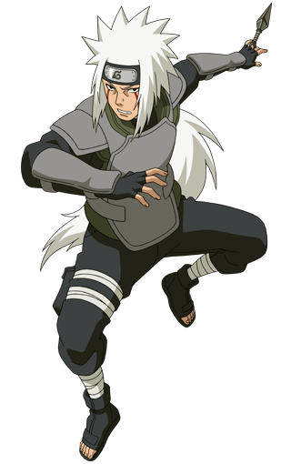

sobre mim:
Aos 17 anos, minha vida é marcada por uma variedade de interesses e responsabilidades. gosto de muito jogos FPS, onde a estratégia e a competição chama a minha atenção. Além disso, nutro uma paixão por carros antigos, fascinado pela engenharia e pelo design dos classicos.
Quando se trata de lazer, aprecio desafios como sinuca e truco. No entanto, um dos meus passatempos favoritos é passar tempo com meus sobrinhos. Esses momentos são preciosos.
Como o filho caçula, reconheço o valor das lições aprendidas com meus irmãos mais velhos, que moldaram minha perspectiva de mundo e meu senso de responsabilidade.sou um jovem comprometido com meus interesses, relações familiares e o constante crescimento pessoal.
